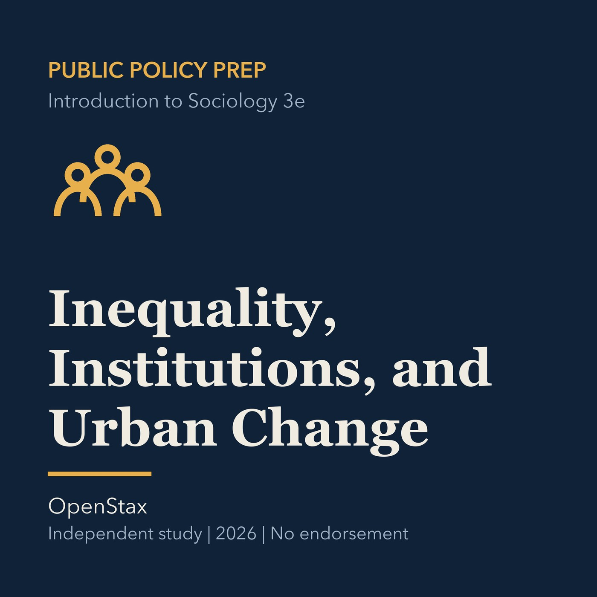

EPISODE 04
Inequality, Institutions, and Urban Change
Examines stratification, institutional barriers, urbanization, and social change in public services.

- Stable GUID
80212596-ed6b-5491-9d9d-251fedc09463- Release
- public-policy-prep-v2026.3
- SHA-256
0baf2d744c78064ab01dc4cde2b64a72bc8da7322bb714b66e5137b58f2c056f